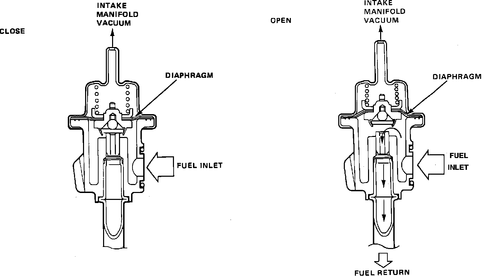

Fuel Pressure Regulator: Description and Operation
Pressure Regulator:

PURPOSE AND LOCATION
The pressure regulator controls the pressure in the fuel system lines to the injectors. The pressure regulator is fitted at the end of the down stream side of the fuel rail mounted near the intake manifold.
CONSTRUCTION
The regulator is a diaphragm-controlled overflow type, which maintains the fuel pressure at a constant 36 psi (2.55 kg/cm2) above the pressure in the intake manifold. It consists of a metal housing divided into two chambers by a diaphragm: a spring chamber for the pre-stressed helical spring which rests on the diaphragm and a chamber for the fuel.
OPERATION
When the fuel pump exceeds the set system pressure, the valve controlled by the diaphragm opens the inlet to the fuel return line, where the excess fuel can flow back to the fuel tank without pressure. A vacuum line connects the spring chamber of the pressure regulator and the intake manifold. This line receives its vacuum from behind the throttle valve.
This results in the fuel system pressure being dependent on the absolute pressure in the intake manifold and therefore maintaining a constant pressure drop over the injectors, no matter what the throttle valve position is. This means that the fuel quantity injected depends only on the time the injectors are open (injection duration).
When the engine is turned OFF, the pressure regulator will maintain a rest pressure of 30 - 35 psi (2.10 - 2.45 kg/cm2).